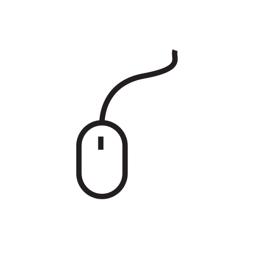
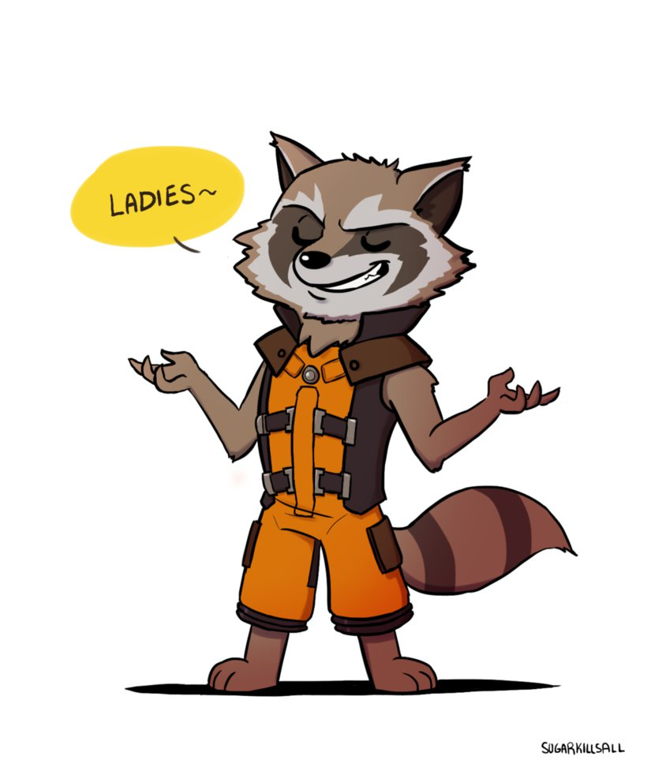

Казаков Сергей, Яндекс
Казаков Сергей,
младший разработчик интерфейсов
Как использовать?
для Lo-Dash нужен unsafe-eval, он активно использует кодогенерацию
<script>
alert('knock knock')
</script>
<a onclick="alert('knock knock')">link</a>
CSP-Tester
Отчет
{
"csp-report": {
"document-uri": "http://localhost:3000/",
"referrer": "",
"violated-directive": "default-src \"self\"",
"effective-directive": "img-src",
"original-policy": "default-src \"self\";
report-uri http://localhost:3000",
"blocked-uri": "https://yastatic.net",
"status-code": 200
}
}
CSP 2.0

лучше, быстрее, мощнее!
Бонус
Казаков Сергей
младший разработчик интерфейсов
+375 (25) 769-88-02
tocher@yandex-team.ru
Tocher
Adblock?